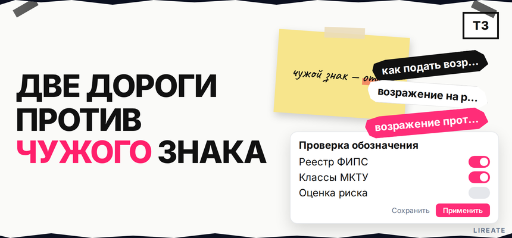
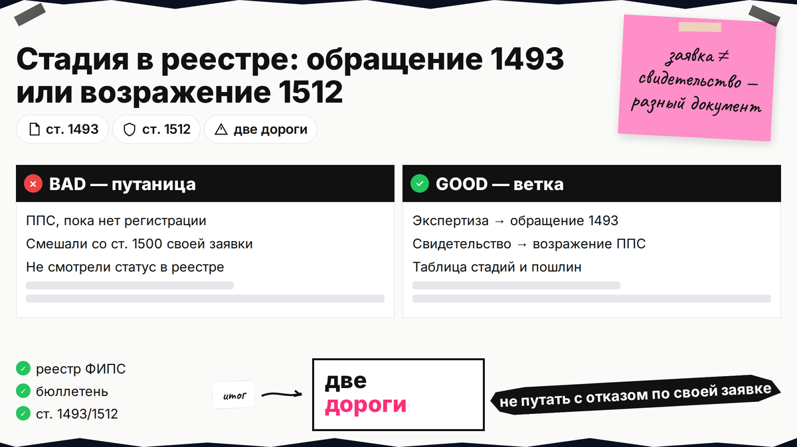
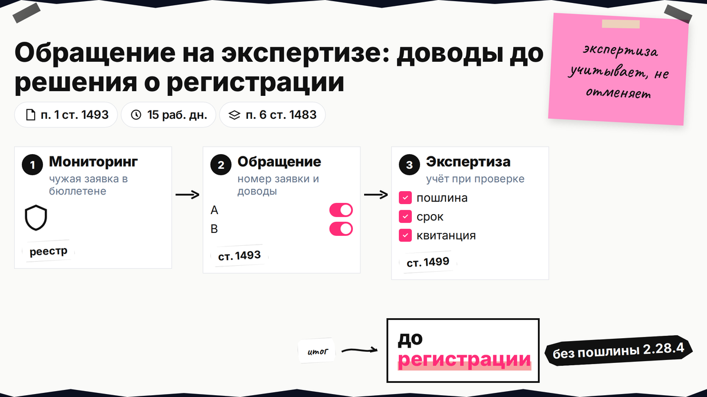
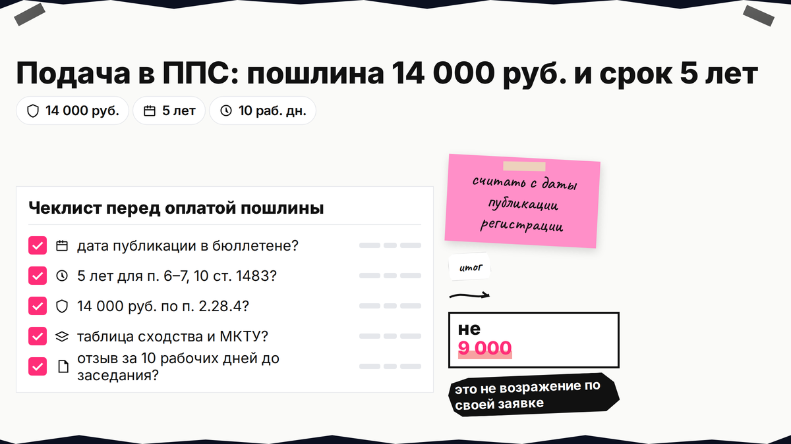

Конкурент подал заявку на имя, похожее на ваш бренд, или уже получил свидетельство в Роспатенте - и кажется, что осталось только судиться. На деле у третьего лица есть два разных инструмента: бесплатное обращение, пока заявка на экспертизе, и платное возражение в Палате по патентным спорам (ППС), если знак уже зарегистрирован. Ниже вы выберете ветку по статусу чужой заявки, уложитесь в сроки, соберёте доказательства сходства и однородности товаров и подготовитесь к заседанию коллегии.

TL;DR / Быстрый инсайт: Пока по чужой заявке нет решения о регистрации, любое лицо может направить в Роспатент обращение по ст. 1493 ГК РФ с доводами о нарушении ст. 1477 и 1483; экспертиза учитывает их при проверке (ст. 1499), но отмена не гарантирована. После регистрации чужого знака заинтересованное лицо подаёт возражение против предоставления правовой охраны по ст. 1512 в ППС: пошлина 14 000 руб. (п. 2.28.4), заседание коллегии, отзыв правообладателя. Это не возражение заявителя на отказ по своей заявке (ст. 1500, 9 000 руб. по п. 2.28.2).
В выдаче смешивают обращение на экспертизе, возражение против свидетельства и ответ заявителя на отказ по своей заявке. Материал на 20.10.2026 не заменяет консультацию поверенного.

Откройте объект спора в Поисковой платформе (бесплатно, круглосуточно с 11.12.2023) или в открытых реестрах ФИПС (поиск по номеру на fips.ru/registers-web). Нужны номер заявки или свидетельства, статус дела и дата публикации в официальном бюллетене.
Делайте: выпишите, идёт ли экспертиза без финального решения о регистрации. Не делайте: подавать возражение по ст. 1512, если в реестре ещё только заявка - для этой стадии другой документ.
| Стадия чужого знака | Документ | Норма | Срок | Пошлина 2.28 | Исход |
|---|---|---|---|---|---|
| Заявка опубликована, решения о регистрации нет | Обращение третьего лица | ст. 1493 | До решения о регистрации | Отдельной пошлины 2.28.4 нет; ознакомление с материалами заявки может оплачиваться по п. 2.27 (1 000 руб.) | Доводы учитываются при экспертизе |
| Государственная регистрация уже состоялась | Возражение против охраны | ст. 1513, основания ст. 1512 | 5 лет с публикации регистрации (п. 6–7, 10 ст. 1483) или весь срок охраны (п. 1–5, 8, 9) | 14 000 руб. (п. 2.28.4) | Решение коллегии ППС, возможна отмена или сужение перечня |
Две дороги: бюллетень с чужой заявкой → обращение (ст. 1493) → экспертиза → регистрация или отказ → при регистрации и вашей заинтересованности → возражение в ППС (14 000 руб.) → заседание → решение → при необходимости суд

По п. 1 ст. 1493 до решения о регистрации любое лицо направляет в Роспатент письменное обращение: номер чужой заявки, доводы по ст. 1477 и 1483 (часто п. 6 ст. 1483 - сходство в однородных товарах), копия вашего ТЗ или заявки. Публикация в бюллетене - до 15 рабочих дней (регламент № 483, п. 66). Алгоритм мониторинга - в чек-листе проверки, но объект - чужие заявки.
Делайте: отправить обращение сразу после обнаружения конфликта и сохранить входящий номер. Не делайте: обещать себе гарантированный отказ конкуренту - Роспатент лишь учитывает доводы, решение остаётся за экспертизой.

После регистрации подают возражение по ст. 1513 в административном порядке у Роспатента (ст. 1248 п. 2). Заинтересованное лицо - владелец более раннего ТЗ, заявитель на сходное обозначение или обладатель фирменного имени в спорных классах МКТУ (номера групп товаров и услуг). Без своего конфликтующего права спор по существу не откроют.
| Основание по ст. 1483 | Срок на возражение (ст. 1512 п. 2) |
|---|---|
| П. 6, 7, 10 (сходство с вашим знаком, НМПТ и т.п.) | 5 лет с даты публикации сведений о государственной регистрации в бюллетене, не с даты подачи заявки |
| П. 1–5, 8, 9 (абсолютные и иные основания) | В течение всего срока действия исключительного права на оспариваемый знак |
Делайте: найти в бюллетене дату публикации регистрации и посчитать пятилетний срок для типичного спора о сходстве. Не делайте: тянуть до последнего месяца пятого года - сбор доказательств и оформление по Правилам ППС 644/261 занимают время.
Пошлина по п. 2.28.4 - 14 000 руб. (не за каждый класс; канон — таблица на rospatent.gov.ru). Подача: почта, приёмная или сайт Роспатента (Правила 644/261, п. 4); на ЕПГУ чаще нужна УКЭП (электронная подпись как на бумаге). Регистрация входящих - до 5 рабочих дней, исправление формальных ошибок - до 2 месяцев; заседание - не позднее 2 месяцев с принятия (п. 26).
Делайте: хранить копию возражения и квитанцию в одной папке с номером дела ППС. Не делайте: путать 14 000 руб. с 9 000 руб. за возражение заявителя на отказ по своей заявке (п. 2.28.2).
По п. 6 ст. 1483 нужны сходство знаков и однородность товаров. Сравните звук, смысл, графику и пересечение классов МКТУ; приложите копию своего ТЗ, таблицу сходства, документы о заинтересованности и квитанцию 14 000 руб. Поиск в реестрах - по чек-листу проверки. Делайте: ссылаться на пункт ст. 1483. Не делайте: подавать без таблицы однородности.
Коллегия - не менее трёх человек (п. 24). Правообладатель присылает отзыв не позднее чем за 10 рабочих дней до заседания - разберите его до даты слушания. Лично можно не приходить; допустима ВКС по ходатайству (ориентир - за 15 рабочих дней, п. 27). Делайте: три тезиса - ваше право, сходство, однородность. Не делайте: игнорировать отзыв.
При удовлетворении возражения охрану отменяют или сужают перечень; при отказе - суд по ст. 1513 п. 4. Лирейт помогает с защитой знака и подготовкой пакета в Роспатент без обещаний исхода ППС.
Статус в реестре → обращение (ст. 1493) или возражение (ст. 1512–1513) → доказательства → подача с квитанцией 14 000 руб. при ППС → календарь заседания и отзыва. Сомневаетесь в сроке - сверьтесь с поверенным до оплаты пошлины.
Материал проверен: редакция Лирейт, практика возражений против регистрации чужих товарных знаков.
Достоверность данных: ст. 1493, 1499, 1512–1513, 1483 п. 6, Правила ППС 644/261 и пошлина 2.28.4 сверены с КонсультантПлюс, ГАРАНТ и таблицей на rospatent.gov.ru на 20.10.2026. Показы Яндекс Вордстат в среде подготовки материала не запрашивались.
Пока нет регистрации, подавайте обращение по ст. 1493. Возражение по ст. 1512 - только против свидетельства, с пошлиной 14 000 руб.
Обращение - на стадии заявки, без 2.28.4 и без коллегии как при оспаривании регистрации. Возражение по ст. 1513 - от заинтересованного лица против зарегистрированного знака, 14 000 руб., заседание коллегии.
По п. 6, 7, 10 ст. 1483 - 5 лет с публикации регистрации в бюллетене. По п. 1–5, 8, 9 - весь срок охраны знака.
Нужен статус заинтересованного лица с собственным конфликтующим правом в спорных товарах.
14 000 руб. (п. 2.28.4), не 9 000 руб. за возражение заявителя на отказ по своей заявке.
Почта, приёмная или электронно (часто УКЭП на ЕПГУ). Сохраните входящий номер; регистрация до 5 рабочих дней.
Нет: достаточно письменных доводов. Можно ВКС по ходатайству. Отзыв правообладателя изучите до заседания.